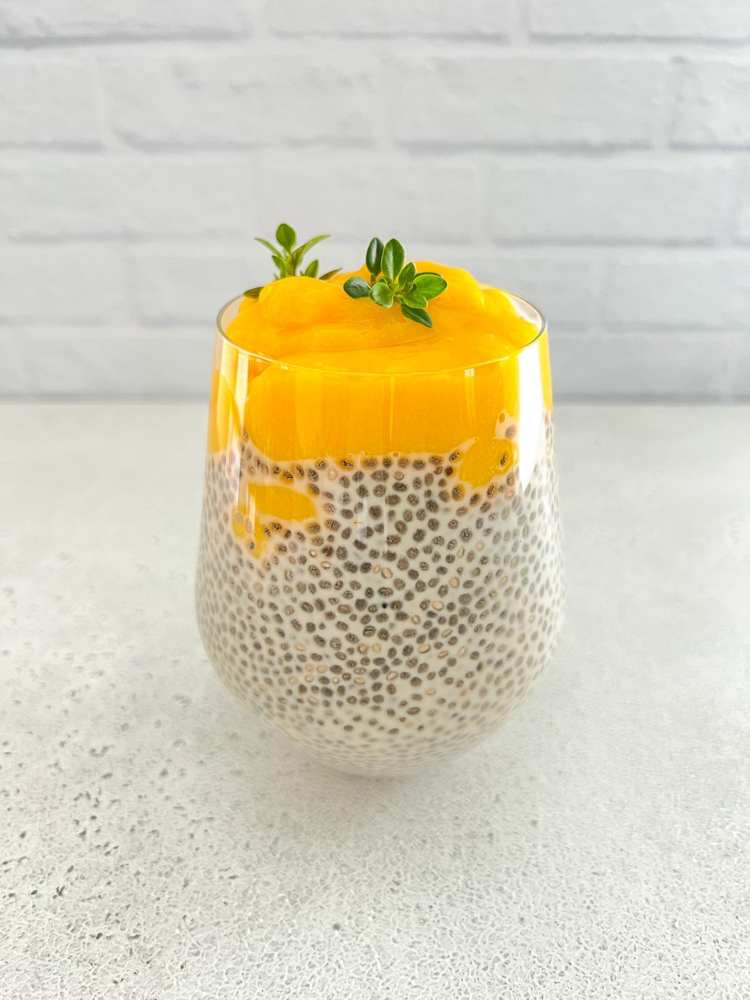

Coconut Mango Chia Pudding

Tasty Mango Coconut Chia Pudding
Thick and creamy mango chia pudding with layers of coconut milk chia pudding and mango puree. You’ll love the fresh, tropical flavor!
Ingredients
- 1 Cup Light Coconut Milk, From a Can
- 3 Tablespoons Chia Seeds
- 1 Tablespoon Maple Syrup, or Sweetener of Choice
- 1 Small Mango, Peeled
- Toasted Coconut Flakes (Topping)
Steps
- Stir together coconut milk, chia seeds and maple syrup. Let sit for 5 minutes then stir the mixture again to get out any clumps that formed. Place mixture in the fridge to set, at least 30 minutes but up to 12 hours.
- While chia pudding is setting, peel mango and remove flesh. Place mango flesh in a high powdered blender and blend until smooth.
- Once chia pudding has set, grab two jars and spoon chia pudding into each. Top with a layer of mango puree and then continue to layer. I did two layers and ended with the chia pudding. Sprinkle a few pieces of toasted coconut on top and enjoy.
- Refrigerate any leftovers. Mango chia pudding should keep for at least 3-4 days.